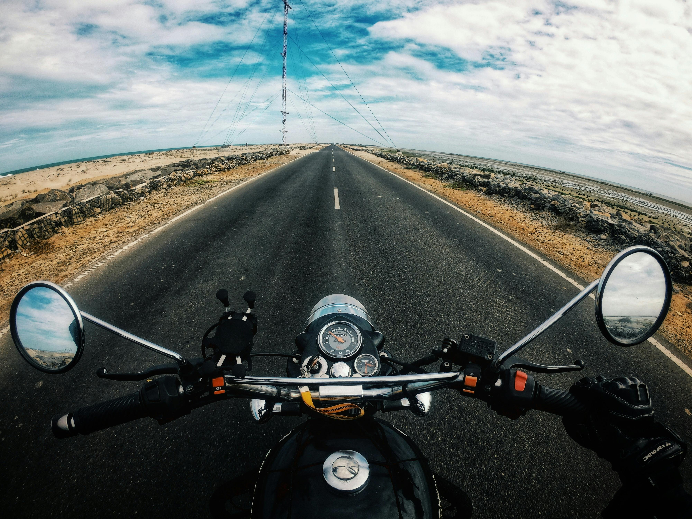
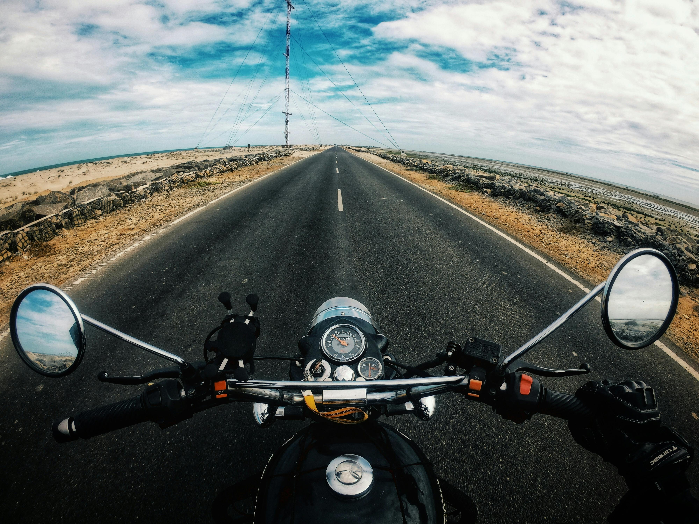
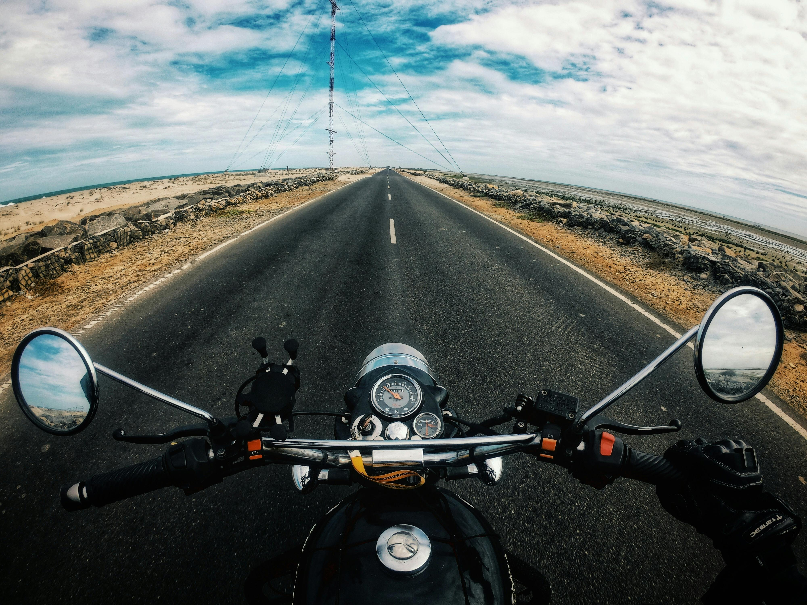
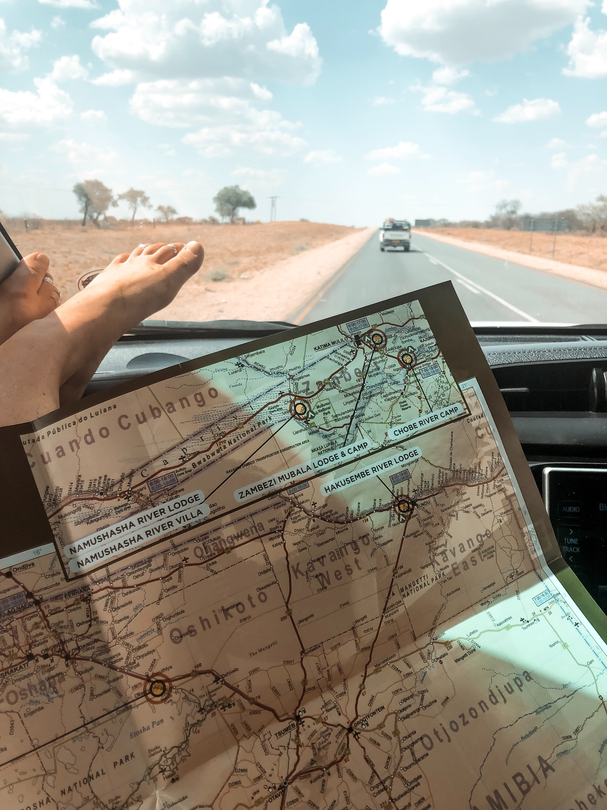
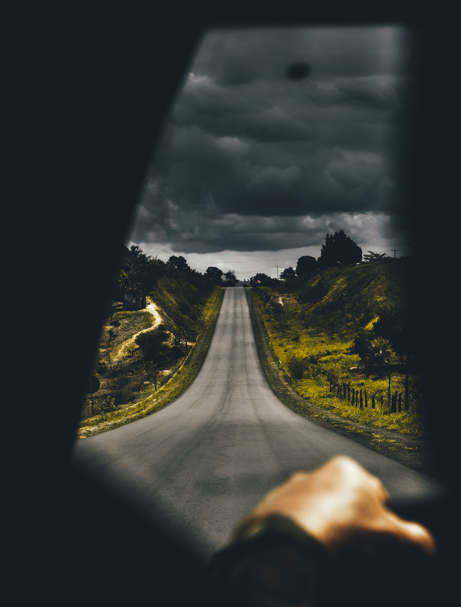

One of my top suggestions for things to do on a road trip with friends is to keep a journal as you go , Write about where you’ve been, what you’ve been doing, and how you’re finding the experience.It doesn’t have to be a hand-written thing either.I mean, writing in a moving vehicle isn’t easy! You could save yourself the hassle (and mess) by typing notes on your phone or even dictating into it.

Another cool thing to do on road trips is to track your route on a map.I did this on a recent trip to Australia. I was travelling around in a rickety old campervan for 6 months or so, covering more than 20,000km and stopping all around the country to take in the sights.Wanting to remember where I’d been, I dropped a pin on Google maps at every new place I went.
 